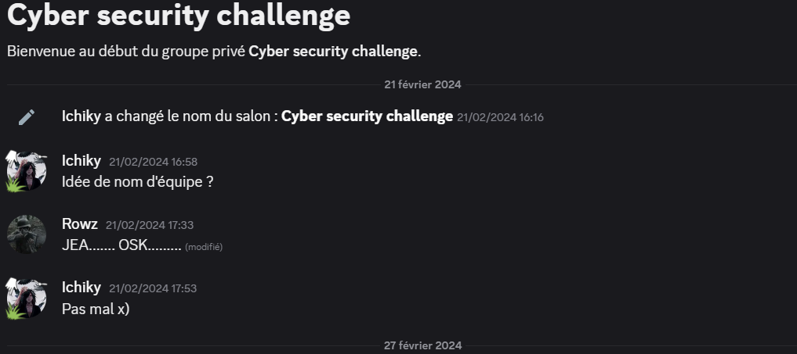
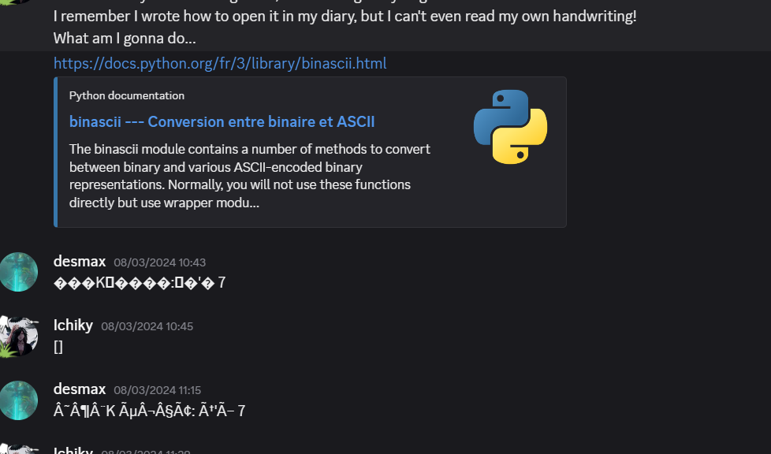

Dans le cadre de mes études, j’ai décidé de participer à un Capture The Flag avec deux amis.
Nous l’avons réalisé en mars 2024 et ce fut la plus grande déception de ma vie.
Nous n’étions simplement pas préparés à cela : nous avons eu énormément de difficultés à marquer des points
et cela devenait vite décourageant.
Cela reste tout de même une bonne expérience. Avec un peu plus de préparation et d'entraînement,
cela aurait pu être bien différent.

